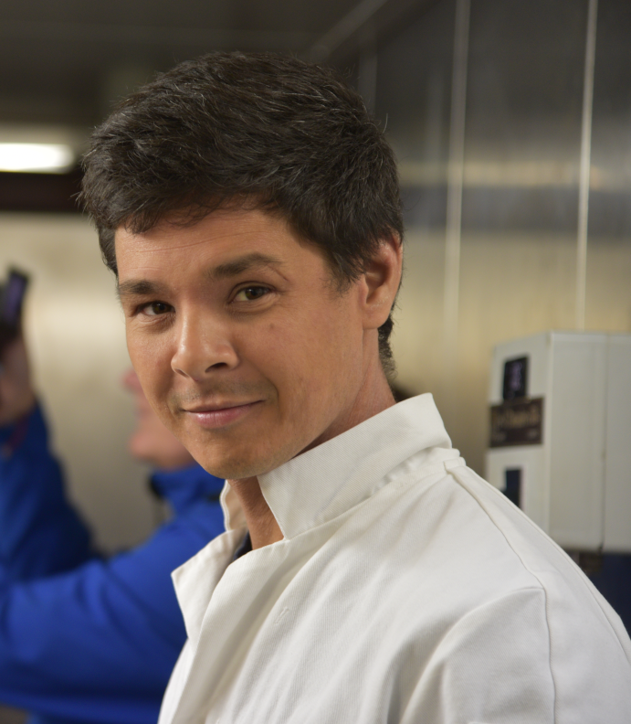

Portofolio
Curious about Nature, from science to photography
Dr. Adrien Tran Lu Y is a french researcher in evolution, working on understanding processes that shape genetic diversity with, mainly on marine organisms.

About me
Adrien is a postdoctoral researcher at UZH's Institute for Evolutionary Anthropology,
focusing on Evolutionary Genetics. His work unravels the evolutionary histories of diverse
species (including dolphins and orangutans, independently).
Adrien's core
research interest in understanding how genetic diversity is shaped across both space and
time. By leveraging advanced population genomics, he investigates demographic history,
genetic connectivity, and patterns of adaptation within populations.